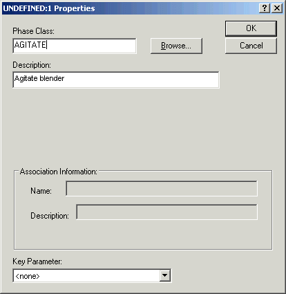
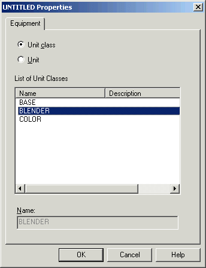
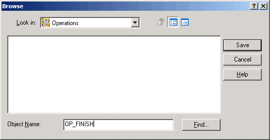

Configure an operation (OP_FINISH)
- Leave the first step and transition as they are on the screen.
- Add a new step by dragging a step icon from the palette to a spot below the first transition.
- Select Properties from the context menu to open the Properties dialog (or double-click the step).
-
Browse for the phase class AGITATE (in the BlenderPhases category). Enter the description as Agitate blender.

The Key Parameter field allows you to select one parameter that will display on the step when viewing the recipe in the Batch Operator Interface. For this tutorial, leave it as the default <none>.
-
Click OK. Another dialog opens for you to select whether the recipe is to be class-based or unit specific. This only occurs on the first step in the recipe and sets the class or unit for the current recipe. Select Unit class, and then select the class BLENDER.

- Draw a line from the previous transition to the step.
-
Add a transition and draw a line from the previous step to the transition.
The following transition text is automatically created:
'AGITATE:1/BSTATUS' = '$phase_state:Complete'
- Add a step and modify it to use the phase class DRAIN. Enter the description as Drain blender.
- Draw a line from the previous transition to the step.
- Drag a termination below the step.
- Draw a line from the step to the termination.
-
Click the Main button, click Save, and then name the operation OP_FINISH.
